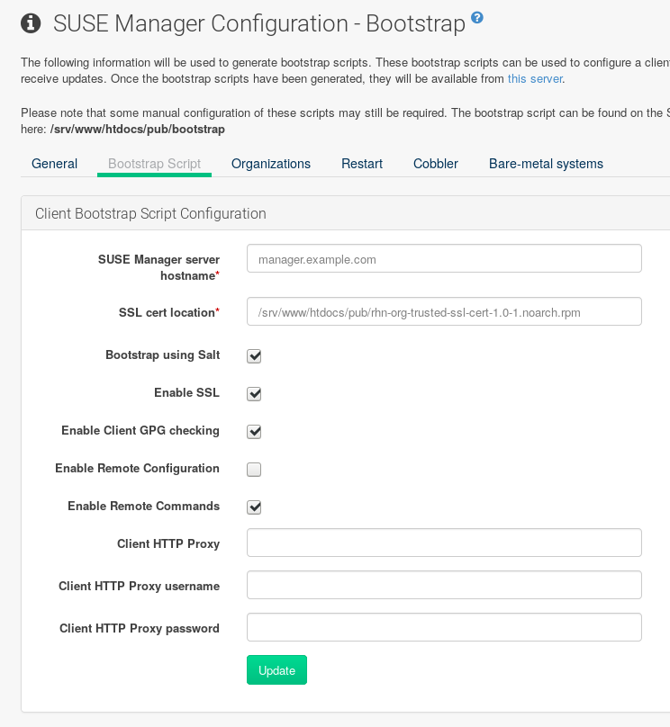

Uyuni 4.0 Proxy
This chapter explains how to install and set up Uyuni 4.0 Proxy. It also provides notes about migrating a previous proxy to version 3.2.
Overview
Uyuni 4.0 Proxy is a Uyuni add-on that caches software packages on an internal, central server. The proxy caches patch updates from SUSE or custom RPMs generated by third-party organizations. A proxy allows you to use bandwidth more effectively because client systems connect to the proxy for updates, and the Uyuni server is no longer required to handle all client requests. A SUSE Manager Proxy can serve both Traditional and Salt clients. The proxy also supports transparent custom package deployment.
Uyuni Proxy is an open source (GPLv2) solution that provides the following features:
-
Cache software packages within a Squid proxy.
-
Client systems see the SUSE Manager Proxy as a Uyuni server instance.
-
The SUSE Manager Proxy is registered as a client system with the Uyuni server.
The primary goal of a SUSE Manager Proxy is to improve Uyuni performance by reducing bandwidth requirements and accelerating response time.
Proxy Installation and Connecting Clients
Requirements
The following section provides SUSE Manager Proxy requirements.
For supported clients and their requirements, see xref:FILENAME.adoc#quickstart.sect.prereq.clientos[].
Hardware requirements highly depend on your usage scenario. When planning proxy environments, consider the amount of data you want to cache on your proxy. If your proxy should be a 1:1 mirror of your Uyuni, the same amount of disk space is required. For specific hardware requirements, see the following table.
| Hardware | Required |
|---|---|
CPU |
Multi-core 64-bit CPU (x86_64). |
RAM |
Minimum 4 GB for a non-production server |
Minimum 16 GB for a production server |
|
Free Disk Space |
Minimum 100 GB for base installation and at least 50 GB for caching per SUSE product and +100 GB per Red Hat product; a resizeable partition strongly recommended. |
|
Storage for Proxy Data
SUSE recommends storing the squid proxy caching data on a separate disk formatted with the XFS file system. |
For installing the proxy, you need the SSL certificate password entered during the initial installation of Uyuni.
For additional network requirements, see xref:FILENAME.adoc#quickstart.sect.prereq.network[].
For using SUSE Manager Proxy, you need an account at SUSE Customer Center (SCC) where your purchased products and product subscriptions are registered. Make sure you have the following subscriptions:
-
One or more subscriptions for SUSE Manager Proxy.
-
One or more subscriptions for Uyuni.
-
Subscriptions for the products on the client systems you want to register with Uyuni via SUSE Manager Proxy .
-
Subscriptions to client entitlements for the client system you want to register with Uyuni via SUSE Manager Proxy .
The connection to the Web server via Secure Sockets Layer (SSL) requires correct time settings on the server, proxy and clients. For this reason, all systems must use NTP. For more information, see https://www.suse.com/documentation/sles-12/book_sle_admin/data/cha_netz_xntp.html.
The following virtual environments are supported:
For running SUSE Manager Proxy in virtual environments, use the following settings for the virtual machine (VM):
-
At least 1 GB of RAM
-
Bridged network
Installation and Setup
The following section will guide you through the installation and setup procedure.
Uyuni Proxy systems are registered as traditional clients or as Salt clients using a bootstrap script. Migrating a traditionally registered Proxy system to a Salt Proxy system is not possible. Re-install the Proxy if you want to switch to Salt.
|
Downloading Channels
Before you can select the correct child channels while creating the activation key, ensure you have completely downloaded the channels for SUSE Linux Enterprise 12 SP4. |
-
Create an activation key based on the SUSE Linux Enterprise 12 SP4 base channel. For more information about activation keys, see xref:FILENAME.adoc#create.act.keys[].
 Figure 1. Proxy Activation Key
Figure 1. Proxy Activation Key -
From the
Child Channelslisting select the Uyuni 4.0 Proxy child channel with the matching update channel (SUSE Manager Proxy-3.2-PoolandSUSE-Manager-Proxy-3.2-Updates). These child channels are required for providing the proxy packages and updates. For normal SLES clients,SLES12-SP4-UpdatesplusSLE-Manager-Tools12-PoolandSLE-Manager-Tools12-Updatesare mandatory. Figure 2. Base and Child Proxy Channel
Figure 2. Base and Child Proxy Channel -
Modify a bootstrap script for the proxy if needed. If you want to run the proxy on a traditional client (system type
Management) uncheckBootstrap using Salt. Using Salt is supported since version 3.2. For more information about bootstrap scripts, see xref:FILENAME.adoc#modify.bootstrap.script[].Figure 3. Modifying Bootstrap Script -
Create the SUSE Manager Tools Repository for bootstrapping, see xref:FILENAME.adoc#create.tools.repository[].
-
Bootstrap the client with the bootstrap script. For more information, see xref:FILENAME.adoc#connect.first.client[].
-
In case of a Salt client, accept the key on the page by clicking the check mark and it will appear in the .
-
Check via that the two proxy channels
SUSE Manager Proxy-3.2-PoolandSUSE-Manager-Proxy-3.2-Updatesare selected.

A few more steps are still needed:
-
Install the
patterns-suma_proxypattern (see xref:FILENAME.adoc#at.manager.proxy.run.pattern[]) -
Copy the SSL certificate and key from the server (see xref:FILENAME.adoc#at.manager.proxy.run.copycert[])
-
Run
configure-proxy.sh(see pass:c[xref:FILENAME.adoc#at.manager.proxy.run.confproxy)
You will then be able to register your clients against the proxy using the Web UI or a bootstrap script as if it were a Uyuni server. For more information, see xref:FILENAME.adoc#at.manager.proxy.register.saltclients[].
Install the suma_proxy pattern
On the server select the pattern_suma_proxy package for installation, or make sure the suma_proxy pattern is installed using the following command on the proxy as root:
zypper in -t pattern suma_proxy
The new salt-broker service will be automatically started at the end of the package installation. This service forwards the Salt interactions to the Uyuni server.
|
Proxy Chains
It is possible to arrange Salt proxies in a chain. In such a case, the upstream proxy is named “parent”. |
Make sure the proxie’s TCP ports 4505 and 4506 are open and that the proxy can reach the Uyuni server (or another upstream proxy) on these ports.
Copy Server Certificate and Key
The proxy will share some SSL information with the Uyuni server, so the next step is to copy the certificate and its key from the Uyuni server or the upstream proxy.
As root, enter the following commands on the proxy using your Uyuni server or chained proxy named PARENT:
mkdir /root/ssl-build cd /root/ssl-build scp root@PARENT:/root/ssl-build/RHN-ORG-PRIVATE-SSL-KEY . scp root@PARENT:/root/ssl-build/RHN-ORG-TRUSTED-SSL-CERT . scp root@PARENT:/root/ssl-build/rhn-ca-openssl.cnf .
|
Known Limitation
The SUSE Manager Proxy functionality is only supported if the SSL certificate was signed by the same CA as the Uyuni Server certificate. Using certificates signed by different CAs for Proxies and Server is not supported. |
Running configure-proxy.sh
The configure-proxy.sh script will finalize the setup of your SUSE Manager Proxy.
Now execute the interactive configure-proxy.sh script.
Pressing Enter without further input will make the script use the default values provided between brackets [].
Here is some information about the requested settings:
- Uyuni Parent
-
A Uyuni parent can be either another proxy server or a Uyuni server.
- HTTP Proxy
-
A HTTP proxy enables your Uyuni proxy to access the Web. This is needed if direct access to the Web is prohibited by a firewall.
- Proxy Version to Activate
-
Normally, the correct value (3.0, 3.1, or 3.2) should be offered as a default.
- Traceback Email
-
An email address where to report problems.
- Use SSL
-
For safety reasons, press
Y. - Do You Want to Import Existing Certificates?
-
Answer
N. This ensures using the new certificates that were copied previously from the Uyuni server. - Organization
-
The next questions are about the characteristics to use for the SSL certificate of the proxy. The organization might be the same organization that was used on the server, unless of course your proxy is not in the same organization as your main server.
- Organization Unit
-
The default value here is the proxy’s hostname.
- City
-
Further information attached to the proxy’s certificate. Beware the country code must be made of two upper case letters. For further information on country codes, refer to the online list of alpha-2 codes.
Country CodeAs the country code enter the country code set during the SUSE Manager installation. For example, if your proxy is in US and your Uyuni in DE, you must enter
DEfor the proxy. - Cname Aliases (Separated by Space)
-
Use this if your proxy server can be accessed through various DNS CNAME aliases. Otherwise it can be left empty.
- CA Password
-
Enter the password that was used for the certificate of your Uyuni server.
- Do You Want to Use an Existing SSH Key for Proxying SSH-Push Salt Minions?
-
Use this option if you want to reuse a SSH key that was used for SSH-Push Salt minions on the server.
- Create and Populate Configuration Channel rhn_proxy_config_1000010001?
-
Accept default
Y. - SUSE Manager Username
-
Use same user name and password as on the Uyuni server.
- Activate advertising proxy via SLP?
-
SLP stands for Service Location Protocol.
If parts are missing, such as CA key and public certificate, the script prints commands that you must execute to integrate the needed files.
When the mandatory files are copied, re-run configure-proxy.sh.
Also restart the script if a HTTP error was met during script execution.
configure-proxy.sh activates services required by Uyuni Proxy, such as squid, apache2, salt-broker, and jabberd.
To check the status of the proxy system and its clients, click the proxy system’s details page on the Web UI (, then the system name). Connection and Proxy subtabs display the respective status information.
Registering Salt Clients via SUSE Manager Proxy
Proxy servers may now act as a broker and package cache for Salt minions. These minions can be registered with a bootstrap script like the traditional clients, or from the Web UI, or the command line.
Registering Salt clients via SUSE Manager Proxy from the Web UI
is done almost the same way as registering clients directly with the Uyuni server.
The difference is that you specify the name of the proxy in the Proxy drop-box on the page.

-
Instead of the Web UI, you may use the command line to register a minion through a proxy. Note that this procedure requires that you have installed the salt package on the minion before registration, and have the Advanced systems module activated. Add the proxy FQDN as the master in the minions configuration file located at:
/etc/salt/minion
or alternatively:
/etc/salt/minion.d/NAME.conf
-
Add the FQDN to the minion file:
master: proxy123.example.com
Save and restart the salt-minion service with:
systemctl restart salt-minion
-
On the Server, accept the new minion key with:
salt-key -a 'minion'
The minion will now connect to the proxy exclusively for Salt operations and normal HTTP package downloads.
Registering Clients via SUSE Manager Proxy with a Script
Registering clients (either traditional or Salt) via SUSE Manager Proxy with a script is done almost the same way as registering clients directly with the Uyuni server. The difference is that you create the bootstrap script on the SUSE Manager Proxy with a command-line tool. The bootstrap script then deploys all necessary information to the clients. The bootstrap script refers some parameters (such as activation keys or GPG keys) that depend on your specific setup.
-
Create a client activation key on the Uyuni server using the Web UI. See xref:FILENAME.adoc#create.act.keys[].
-
On the proxy, execute the
mgr-bootstrapcommand-line tool as root. If needed, use the additional command-line switches to tune your bootstrap script. An important option is--traditionalthat enables to opt for a traditional client instead of a salt minion.To view available options type
mgr-bootstrap --helpfrom the command line:# mgr-bootstrap --activation-keys=key-string
-
Optionally edit the resulting bootstrap script. Execute the bootstrap script on the clients as described in xref:FILENAME.adoc#connect.first.client[].
The clients are registered with the SUSE Manager Proxy specified in the bootstrap script.
Additional Information about Client Registration on Proxies
Within the Web UI, standard proxy pages will show information about client, no matter whether minions or traditional clients.
A list of clients connected to a proxy can be seen by clicking on the name of the Proxy in , selecting the Details tab, and then selecting the Proxy tab.
A list of chained proxies for a minion can be seen by clicking on the name of the minion in , selecting the Details tab, and then selecting the Connection tab.
If you decide to move any of your clients between proxies or the server you will need to repeat the registration process from scratch.
Enabling PXE Boot via SUSE Manager Proxy
Synchronizing Profiles and System Information
To enable PXE boot via a proxy server, additional software must be installed and configured on both the Uyuni server and the SUSE Manager Proxy server.
-
On the Uyuni server install susemanager-tftpsync :
zypper in susemanager-tftpsync
-
On the SUSE Manager Proxy server install susemanager-tftpsync-recv :
zypper in susemanager-tftpsync-recv
-
Run the
configure-tftpsync.shsetup script and enter the requested information:configure-tftpsync.sh
It asks for hostname and IP address of the Uyuni server and of the proxy itself. Additionally, it asks for the tftpboot directory on the proxy.
-
On the Uyuni server, run
configure-tftpsync.shto configure the upload to the SUSE Manager Proxy server:configure-tftpsync.sh FQDN_of_Proxy_Server
-
To initiate an initial synchronization on the SUSE Manager Server run:
cobbler sync
Also can also be done after each a change within Cobbler that needs to be synchronized immediately. Otherwise Cobbler synchronization will also run automatically when needed. For more information about Cobbler, see xref:FILENAME.adoc#advanced.topics.cobbler[].
Configuring DHCP for PXE via SUSE Manager Proxy
Uyuni is using Cobbler to provide provisioning. PXE (tftp) is installed and activated by default. To enable systems to find the PXE boot on the SUSE Manager Proxy server add the following to the DHCP configuration for the zone containing the systems to be provisioned:
next-server: <IP_Address_of_SUSE_Manager_Proxy_Server> filename: "pxelinux.0"
Migrating Uyuni 3.1 Proxy to Version 4.0 [Management]
The recommended order for migrations is to first migrate the server and then the proxies.
For the migration of traditionally managed proxies there are two possible approaches:
-
Existing Uyuni proxies may be upgraded to version 3.2 with YaST or
zyppermigration. -
Alternatively, the proxies may be replaced by new ones.
This section documents both approaches.
|
Migrating Uyuni 3 Proxy and Earlier
For migrating Uyuni 3 Proxy and earlier, see https://www.suse.com/documentation/suse-manager-3/book_suma_advanced_topics_31/data/sect1_chapter_book_suma_advanced_topics_31.html, Chapter "SUSE Manager 3.1 Proxy". |
Replacing a SUSE Manager Proxy
A SUSE Manager Proxy is dumb in the sense that it does not contain any information about the clients which are connected to it.
A SUSE Manager Proxy can therefore be replaced by a new one.
Naturally, the replacement proxy must have the same name and IP address as its predecessor.
In order to replace a SUSE Manager Proxy and keeping the clients registered to the proxy leave the old proxy in Uyuni. Create a reactivation key for this system and then register the new proxy using the reactivation key. If you do not use the reactivation key, you will need to re-registered all the clients against the new proxy.
-
Before starting the actual migration procedure, save the data from the old proxy, if needed. Consider copying important data to a central place that can also be accessed by the new server:
-
Copy the scripts that are still needed.
-
Copy the activation keys from the previous server. Of course, it is always better to re-create the keys.
-
-
Shutdown the server.
-
Install a new Uyuni 4.0 Proxy, see xref:FILENAME.adoc#at.manager.proxy.inst-and-clients[].
-
In the Uyuni Web UI select the newly installed SUSE Manager Proxy and delete it from the systems list.
-
In the Web UI, create a reactivation key for the old proxy system: On the System Details tab of the old proxy click
Reactivation. Then clickGenerate New Key, and remember it (write it on a piece of paper or copy it to the clipboard). For more information about reactivation keys, see xref:FILENAME.adoc#s5-sm-system-details-react[]. -
After the installation of the new proxy, perform the following actions (if needed):
-
Copy the centrally saved data to the new proxy system.
-
Install any other needed software.
-
If the proxy is also used for autoinstallation, do not forget to setup TFTP synchronization.
-
|
Proxy Installation and Client Connections
During the installation of the proxy, clients will not be able to reach the Uyuni server.
After a SUSE Manager Proxy system has been deleted from the systems list, all clients connected to this proxy will be (incorrectly) listed as |
Upgrading a SUSE Manager Proxy from 3.1 to 4.0
In most situations upgrading the proxy will be your preferred solution as this retains all cached packages. Selecting this route saves time especially regarding proxies connected to Uyuni server via low-bandwith links. This upgrade is similar to a standard client migration.
|
Synchronizing Target Channels
Before successfully initializing the product migration, you first must make sure that the migration target channels are completely mirrored.
To upgrade to Uyuni 3.2 Proxy, you will require at least the |
-
Direct your browser to the Uyuni Web UI where your proxy is registered, and login.
-
On the page select your proxy server from the table.

-
On the system’s detail page select the tab.

-
From this page you will see installed products listed on your proxy client, and the available target products. Select the required
Target Products. In this case, you will requireSUSE Linux Enterprise Server 12 SP4withSUSE Manager Proxy 3.2.
-
Then confirm with Select Channels.

-
From the
Schedule Migrationmenu, select the time and click Confirm.
Check the System Status on the when the migration is done.

Finally consider scheduling a reboot.